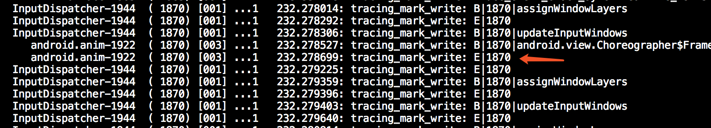

你好，我是孙鹏飞。又到了答疑的时间，今天我将围绕卡顿优化这个主题，和你探讨一下专栏第 6 期和补充篇的两个 Sample 的实现。
专栏第 6 期的 Sample 完全来自于 Facebook 的性能分析框架Profilo，主要功能是收集线上用户的 atrace 日志。关于 atrace 相信我们都比较熟悉了，平时经常使用的 systrace 工具就是封装了 atrace 命令来开启 ftrace 事件，并读取 ftrace 缓冲区生成可视化的 HTML 日志。这里多说一句，ftrace 是 Linux 下常用的内核跟踪调试工具，如果你不熟悉的话可以返回第 6 期文稿最后查看 ftrace 的介绍。Android 下的 atrace 扩展了一些自己使用的 categories 和 tag，这个 Sample 获取的就是通过 atrace 的同步事件。
Sample 的实现思路其实也很简单，有两种方案。
第一种方案：hook 掉 atrace 写日志时的一系列方法。以 Android 9.0 的代码为例写入 ftrace 日志的代码在trace-dev.cpp里，由于每个版本的代码有些区别，所以需要根据系统版本做一些区分。
第二种方案：也是 Sample 里所使用的方案，由于所有的 atrace event 写入都是通过/sys/kernel/debug/tracing/trace_marker，atrace 在初始化的时候会将该路径 fd 的值写入atrace_marker_fd全局变量中，我们可以通过 dlsym 轻易获取到这个 fd 的值。关于 trace_maker 这个文件我需要说明一下，这个文件涉及 ftrace 的一些内容，ftrace 原来是内核的事件 trace 工具，并且 ftrace 文档的开头已经写道
Ftrace is an internal tracer designed to help out developers and designers of systems to find what is going on inside the kernel.
从文档中可以看出来，ftrace 工具主要是用来探查 outside of user-space 的性能问题。不过在很多场景下，我们需要知道 user space 的事件调用和 kernel 事件的一个先后关系，所以 ftrace 也提供了一个解决方法，也就是提供了一个文件 trace_marker，往该文件中写入内容可以产生一条 ftrace 记录，这样我们的事件就可以和 kernel 的日志拼在一起。但是这样的设计有一个不好的地方，在往文件写入内容的时候会发生 system call 调用，有系统调用就会产生用户态到内核态的切换。这种方式虽然没有内核直接写入那么高效，但在很多时候 ftrace 工具还是很有用处的。
由此可知，用户态的事件数据都是通过 trace_marker 写入的，更进一步说是通过 write 接口写入的，那么我们只需要 hook 住 write 接口并过滤出写入这个 fd 下的内容就可以了。这个方案通用性比较高，而且使用 PLT Hook 即可完成。
下一步会遇到的问题是，想要获取 atrace 的日志，就需要设置好 atrace 的 category tag 才能获取到。我们从源码中可以得知，判断 tag 是否开启，是通过 atrace_enabled_tags & tag 来计算的，如果大于 0 则认为开启，等于 0 则认为关闭。下面我贴出了部分 atrace_tag 的值，你可以看到，判定一个 tag 是否是开启的，只需要 tag 值的左偏移数的位值和 atrace_enabled_tags 在相同偏移数的位值是否同为 1。其实也就是说，我将 atrace_enabled_tags 的所有位都设置为 1，那么在计算时候就能匹配到任何的 atrace tag。
#define ATRACE_TAG_NEVER 0 #define ATRACE_TAG_ALWAYS (1<<0) #define ATRACE_TAG_GRAPHICS (1<<1)#define ATRACE_TAG_INPUT (1<<2)#define ATRACE_TAG_VIEW (1<<3)#define ATRACE_TAG_WEBVIEW (1<<4)#define ATRACE_TAG_WINDOW_MANAGER (1<<5)#define ATRACE_TAG_ACTIVITY_MANAGER (1<<6)#define ATRACE_TAG_SYNC_MANAGER (1<<7)#define ATRACE_TAG_AUDIO (1<<8)#define ATRACE_TAG_VIDEO (1<<9)#define ATRACE_TAG_CAMERA (1<<10)#define ATRACE_TAG_HAL (1<<11)#define ATRACE_TAG_APP (1<<12)下面是我用 atrace 抓下来的部分日志。

看到这里有同学会问，Begin 和 End 是如何对应上的呢？要回答这个问题，首先要先了解一下这种记录产生的场景。这个日志在 Java 端是由 Trace.traceBegin 和 Trace.traceEnd 产生的，在使用上有一些硬性要求：这两个方法必须成对出现，否则就会造成日志的异常。请看下面的系统代码示例。
void assignWindowLayers(boolean setLayoutNeeded) {2401 Trace.traceBegin(Trace.TRACE_TAG_WINDOW_MANAGER, "assignWindowLayers");// 关注此处事件开始代码2402 assignChildLayers(getPendingTransaction());2403 if (setLayoutNeeded) {2404 setLayoutNeeded();2405 }24062411 scheduleAnimation();2412 Trace.traceEnd(Trace.TRACE_TAG_WINDOW_MANAGER);// 事件结束2413 }2414所以我们可以认为 B 下面紧跟的 E 就是事件的结束标志，但很多情况下我们会遇到上面日志中所看到的两个 B 连在一起，紧跟的两个 E 我们不知道分别对应哪个 B。此时我们需要看一下产生事件的 CPU 是哪个，并且看一下产生事件的 task_pid 是哪个，也就是最前面的 InputDispatcher-1944，这样我们就可以对应出来了。
接下来我们一起来看看补充篇的 Sample，它的目的是希望让你练习一下如何监控线程创建，并且打印出创建线程的 Java 方法。Sample 的实现比较简单，主要还是依赖 PLT Hook 来 hook 线程创建时使用的主要函数 pthread_create。想要完成这个 Sample 你需要知道 Java 线程是如何创建出来的，并且还要理解 Java 线程的执行方式。需要特别说明的是，其实这个 Sample 也存在一个缺陷。从虚拟机的角度看，线程其实又分为两种，一种是 Attached 线程，我习惯按照.Net 的叫法称其为托管线程；一种是 Unattached 线程，为非托管线程。但底层都是依赖 POSIX Thread 来实现的，从 pthread_create 里无法区分该线程是否是托管线程，也有可能是 Native 直接开启的线程，所以有可能并不能对应到创建线程时候的 Java Stack。
关于线程，我们在日常监控中可能并不太关心线程创建时候的状况，而区分线程可以通过提前设置 Thread Name 来实现。举个例子，比如在出现 OOM 时发现是发生在 pthread_create 执行的时候，说明当前线程数可能过多，一般我们会在 OOM 的时候采集当前线程数和线程堆栈信息，可以看一下是哪个线程创建过多，如果指定了线程名称则很快就能查找出问题所在。
对于移动端的线程来说，我们大多时候更关心的是主线程的执行状态。因为主线程的任何耗时操作都会影响操作界面的流畅度，所以我们经常把看起来比较耗时的操作统统都往子线程里面丢，虽然这种操作虽然有时候可能很有效，但还可能会产生一些我们平时很少遇到的异常情况。比如我曾经遇到过，由于用户手机的 I/O 性能很低，大量的线程都在 wait io；或者线程开启的太多，导致线程 Context switch 过高；又或者是一个方法执行过慢，导致持有锁的时间过长，其他线程无法获取到锁等一系列异常的情况，
虽然线程的监控很不容易，但并不是不能实现，只是实现起来比较复杂并且要考虑兼容性。比如我们可能比较关心一个 Lock 当前有多少线程在等待锁释放，就需要先获取到这个 Object 的 MirrorObject，然后构造一个 MonitorInfo，之后获取到 waiters 的列表，而这个列表里就存储了等待锁释放的线程。你看其实过程也并不复杂，只是在计算地址偏移量的时候需要做一些处理。
当然还有更细致的优化，比如我们都知道 Java 里是有轻量级锁和重量级锁的一个转换过程，在 ART 虚拟机里被称为 ThinLocked 和 FatLocked，而转换过程是通过 Monitor::Inflate 和 Monitor::Deflate 函数来实现的。此时我们可以监控 Monitor::Inflate 调用时 monitor 指向的 Object，来判断是哪段代码产生了“瘦锁”到“胖锁”转换的过程，从而去做一些优化。接下来要做优化，需要先知晓 ART 虚拟机锁转换的机制，如果当前锁是瘦锁，持有该锁的线程再一次获取这个锁只递增了 lock count，并未改变锁的状态。但是 lock count 超过 4096 则会产生瘦锁到胖锁的转换，如果当前持有该锁的线程和进入 MontorEnter 的线程不是同一个的情况下就会产生锁争用的情况。ART 虚拟机为了减少胖锁的产生做了一些优化，虚拟机先通过sched_yield让出当前线程的执行权，操作系统在后面的某个时间再次调度该线程执行，从调用 sched_yield 到再次执行的时候计算时间差，在这个时间差里占用该锁的线程可能会释放对锁的占用，那么调用线程会再次尝试获取锁，如果获取锁成功的话则会从 Unlocked 状态直接转换为 ThinLocked 状态，不会产生 FatLocked 状态。这个过程持续 50 次，如果在 50 次循环内无法获取到锁则会将瘦锁转为胖锁。如果我们对某部分的多线程代码性能敏感，则希望锁尽量持续在瘦锁的状态，我们可以减少同步块代码的粒度，尽量减少很多线程同时争抢锁，可以监控 Inflate 函数调用情况来判断优化效果。
最后，还有同学对在 Crash 状态下获取 Java 线程堆栈的方法比较感兴趣，我在这里简单讲一下，后面会有专门的文章介绍这部分内容。
一种方案是使用 ThreadList::ForEach 接口间接实现，具体的逻辑可以看这里。另一种方案是 Profilo 里的Unwinder机制，这种实现方式就是模拟StackVisitor的逻辑来实现。
这两期反馈的问题不多，答疑的内容也可以算作对正文的补充，如果有同学想多了解虚拟机的机制或者其他性能相关的问题，欢迎你给我留言，我也会在后面的文章和你聊聊这些话题，比如有同学问到的 ART 下 GC 的详细逻辑之类的问题。
相关资料
福利彩蛋
今天为认真提交作业完成练习的同学，送出第二波“学习加油礼包”。@Seven同学提交了第 5 期的作业，送出“极客周历”一本，其他同学如果完成了练习千万别忘了通过 Pull request 提交哦。
COMMUNITY NOTES
读者评论
请问这些知识是怎么获取到的呢？总感觉获取原声资料的渠道很受限制，感谢授人以鱼，更感谢授人以渔，感谢🙏
通过hook atrace拿到的systrace，有cpu和其它进程的信息吗？